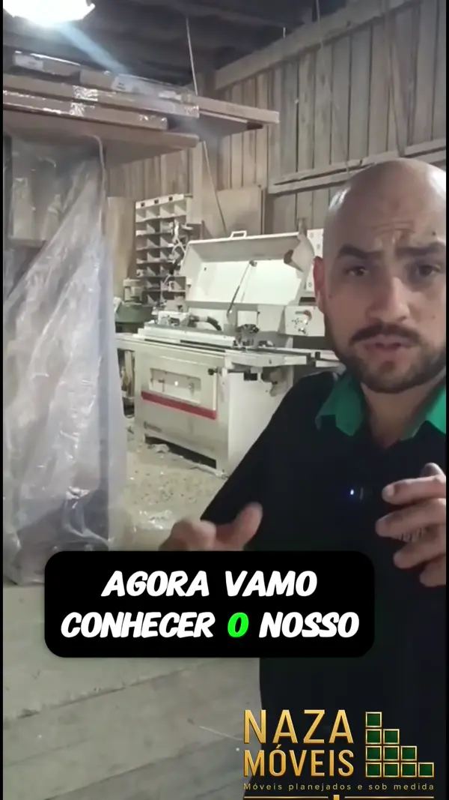
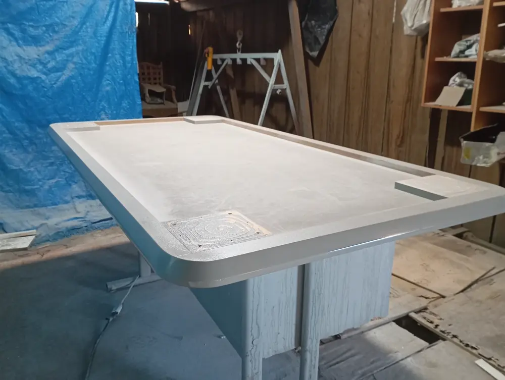

NAZA MÓVEIS · GRAVATAÍ E REGIÃO
Do rascunho
à execução.
Cada etapa ajuda a transformar suas necessidades em um móvel pensado para o seu espaço.
DO RASCUNHO À EXECUÇÃO
O cuidado aparece no resultado.
E começa muito antes.
Medir, planejar, cortar, dar acabamento e montar. Conheça o trabalho que acontece até o móvel chegar à sua casa.
Ler o texto do vídeo
Você já parou para pensar em tudo o que acontece antes do móvel chegar prontinho à sua casa? Naza Móveis por dentro: como o seu sonho vira móvel sob medida. Tudo começa no projeto. A gente entende o espaço, as medidas e as necessidades de cada cliente para criar uma solução personalizada. Com o projeto definido, selecionamos os materiais e os acabamentos que vão dar forma ao móvel. Depois, cada peça é cortada com precisão, seguindo exatamente as medidas definidas no projeto. Na laminação, fazemos o acabamento e protegemos as bordas, deixando cada componente preparado para a próxima etapa. É na montagem que todas as peças começam a se encaixar e o projeto finalmente ganha vida. Do projeto à instalação, cada etapa é acompanhada com cuidado pela nossa equipe. Quer transformar seu espaço também? Fale com a Naza Móveis.
POR DENTRO DA NAZA Projeto, material, corte, acabamento e montagem.
DA IDEIA AO MÓVEL INSTALADO
Você vê um rabisco.
Nós vemos potencial.
O projeto começa com o seu espaço: as medidas, a circulação e tudo o que precisa caber nele. Na fabricação, cada peça começa a transformar essa ideia em realidade.


COMO CONTRATAR
Da primeira conversa
à última peça instalada.
- 01
Conversa
Conte o que você precisa e envie fotos do espaço.
- 02
Medição
As medidas orientam as possibilidades do móvel.
- 03
Projeto
Definimos a solução, os materiais e os acabamentos.
- 04
Fabricação
O desenho ganha forma, peça por peça.
- 05
Instalação
Montagem e ajustes para o móvel ficar pronto para uso.
ANTES DE COMEÇAR
Vamos tirar
suas dúvidas.
Cada projeto é único. A equipe ajuda você a entender as possibilidades.
O que enviar para pedir um orçamento?
Fotos do espaço, medidas aproximadas, sua cidade e uma descrição do móvel desejado já ajudam a iniciar a conversa. Referências de estilo também são bem-vindas.
Vocês fazem quais tipos de móveis?
Cozinhas, quartos, closets, salas, banheiros e outros móveis planejados e sob medida. Conte à equipe qual solução você procura.
Qual é o prazo de entrega?
O prazo depende do projeto, dos materiais e da agenda de fabricação. Ele deve ser alinhado com a equipe durante o orçamento.
Atendem a minha cidade?
O atendimento é em Gravataí e região. Envie sua localização para confirmar a disponibilidade para o seu projeto.
PORTFÓLIO NAZA
Explore os projetos.
Veja os detalhes e as etapas.
Abra cada projeto para ver o mesmo móvel por outros ângulos e acompanhar seus registros de execução.
O PRÓXIMO PROJETO PODE SER O SEU
Vamos planejar
os seus móveis?
Envie uma foto do espaço e conte o que gostaria de mudar.
A primeira etapa é uma boa conversa.